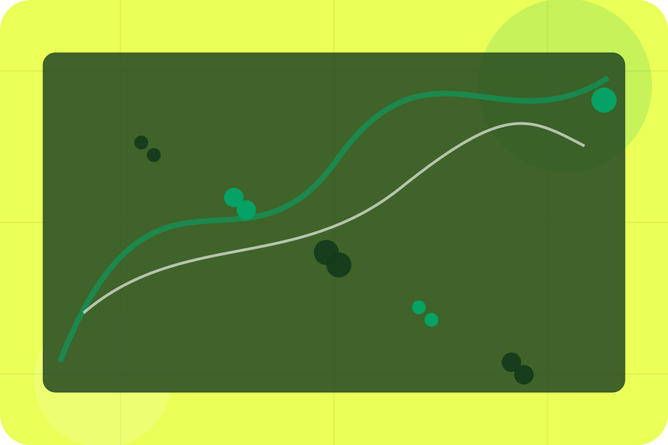
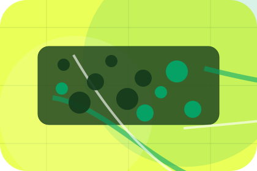
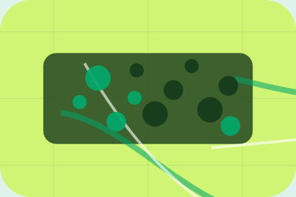

Details
What information helps Ride respond with a useful answer instead of a generic reply.
Booking / 01
Booking opens as a clear transport decision hub: what Ride offers, who it helps, why it matters, and which route to take first.
The first screen combines positioning, proof, primary action, and fast internal navigation, so people can act immediately or compare the rest of the booking route with context.
Green transit planner hero
Select the closest route and Ride keeps the next step, proof, and follow-up expectation aligned with safe reliable movement.

Booking / 02
Pickup makes the contact path concrete: what to send, how the response works, and what Ride needs before visitors book a ride.
The section reduces contact friction by naming the channel, expected detail, privacy path, and response expectation instead of dropping visitors into a generic form.
Explore BookingWhat information helps Ride respond with a useful answer instead of a generic reply.
How the visitor should think about response, urgency, location, or availability.
The expected next message keeps scope, timing, and the first practical step clear.
Booking / 03
Destination makes the contact path concrete: what to send, how the response works, and what Ride needs before visitors book a ride.
The section reduces contact friction by naming the channel, expected detail, privacy path, and response expectation instead of dropping visitors into a generic form.
Explore BookingWhat information helps Ride respond with a useful answer instead of a generic reply.
How the visitor should think about response, urgency, location, or availability.
The expected next message keeps scope, timing, and the first practical step clear.
Booking / 04
Passengers makes the contact path concrete: what to send, how the response works, and what Ride needs before visitors book a ride.
The section reduces contact friction by naming the channel, expected detail, privacy path, and response expectation instead of dropping visitors into a generic form.
Explore BookingWhat information helps Ride respond with a useful answer instead of a generic reply.
How the visitor should think about response, urgency, location, or availability.
The expected next message keeps scope, timing, and the first practical step clear.
Booking / 05
Date makes the contact path concrete: what to send, how the response works, and what Ride needs before visitors book a ride.
The section reduces contact friction by naming the channel, expected detail, privacy path, and response expectation instead of dropping visitors into a generic form.
Explore BookingWhat information helps Ride respond with a useful answer instead of a generic reply.
How the visitor should think about response, urgency, location, or availability.
The expected next message keeps scope, timing, and the first practical step clear.
Booking / 06
Addons makes the contact path concrete: what to send, how the response works, and what Ride needs before visitors book a ride.
The section reduces contact friction by naming the channel, expected detail, privacy path, and response expectation instead of dropping visitors into a generic form.
Explore BookingWhat information helps Ride respond with a useful answer instead of a generic reply.
How the visitor should think about response, urgency, location, or availability.

The expected next message keeps scope, timing, and the first practical step clear.
Booking / 07
Payment makes commercial comparison easier by showing fit, scope, and terms before transport visitors ask for the next step.
The layout keeps price-sensitive decisions honest: it separates starting scope, fuller delivery, and ongoing support so the visitor can ask a sharper question.
Explore BookingRide frames payment around fit, scope, and terms so visitors can compare cost without losing the outcome.
Book RideBooking / 08
Confirmation makes the contact path concrete: what to send, how the response works, and what Ride needs before visitors book a ride.
The section reduces contact friction by naming the channel, expected detail, privacy path, and response expectation instead of dropping visitors into a generic form.
Explore BookingWhat information helps Ride respond with a useful answer instead of a generic reply.
How the visitor should think about response, urgency, location, or availability.
The expected next message keeps scope, timing, and the first practical step clear.
Booking / 09
Changes makes the contact path concrete: what to send, how the response works, and what Ride needs before visitors book a ride.
The section reduces contact friction by naming the channel, expected detail, privacy path, and response expectation instead of dropping visitors into a generic form.
Explore BookingWhat information helps Ride respond with a useful answer instead of a generic reply.
Booking / 10
Ride closes the booking route with a clear action, a quick reminder of the value, and a low-friction way to book a ride.
Visitors who are ready can use the primary action. Visitors who are still comparing can scan the section links, proof, and support routes before they book a ride.
Book RideThe final block keeps the choice simple: act now, compare one more proof route, or send enough detail for a focused response.
Book Ridesafe reliable movement
A passenger mobility site with green route planning, fare estimate cards, map surfaces, and fast booking. Booking ends with a direct path to book a ride, plus enough context for visitors who still need to compare.

Book RideInformation is provided for planning and should be reviewed for the final client, location, and operating rules.